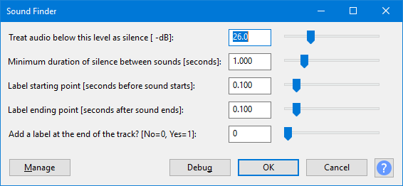

Sound Finder
After typing the name of the track or section in each label, will export audio files in one process corresponding to each label's audio. See Splitting a recording into separate tracks.
Sound Finder...
- Accessed by:
- 
{kind=link}
Sound Finder divides up a selection by placing region labels for areas of sound that are separated by silence. Use this to make the labels show the exact region of each track to be exported. This lets you remove some or all of the silence between the tracks.
If any album tracks have more than one label, increase the silence level and duration. If any labels extend into other album tracks, reduce the silence level and duration.
Buttons
Clicking on the command buttons give the following results:
- gives a dropdown menu enabling you to manage presets for the tool and to see some detail about the tool. For details see Manage presets.
- applies the effect to the selected audio with the current effect settings.
- aborts the effect and leaves the audio unchanged.
 brings you to the appropriate page in the Manual, this page.
brings you to the appropriate page in the Manual, this page.
Examples
See Silence Finder and Sound Finder for examples comparing and contrasting the usage of Silence Finder and Sound Finder.